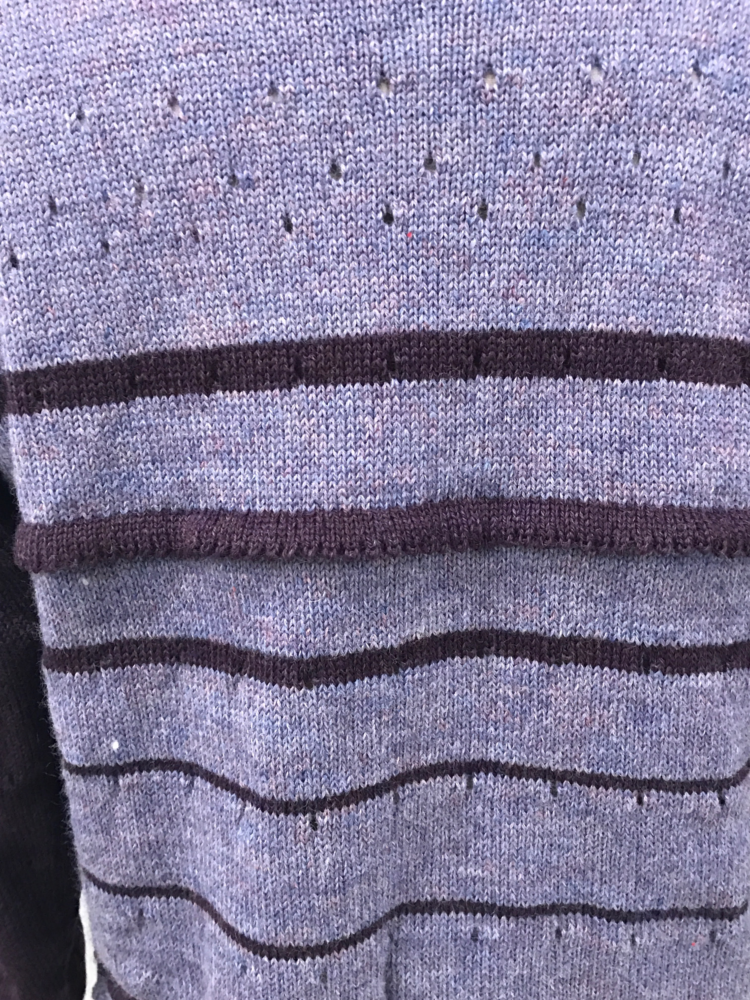
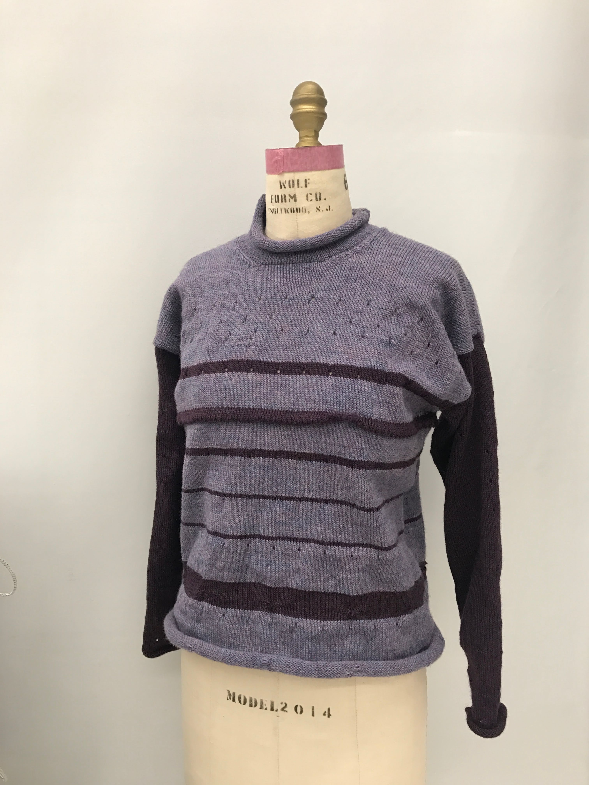

07 machine knitting
knitwear
Exploring the materiality of knitwear through a series of samples in various colours, patterns and textures. Finalizing with a fully knitted sweater.
Process
various samples


Sweater
process
final product
